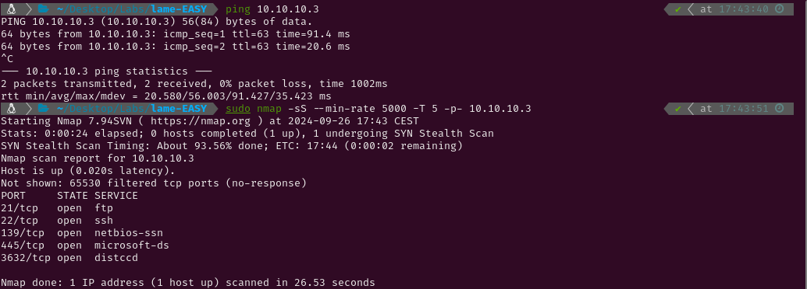

EASY - LAME
1. Recon
I began by pinging the target machine to observe the TTL (Time-to-Live) value. Since it was close to 64, I identified it as a Linux system; had it been closer to 128, it would have indicated a Windows machine. Next, I conducted a nmap scan to detect active services on the target. Given that this is a Hack The Box machine (a controlled environment), I optimized the scan for speed using the following flags: --min-rate 5000, -sS for a SYN scan, and -T5 for maximum speed.

The scan has revealed the following open ports:
- FTP on port 21
- SSH on port 22
- NetBios-ssn on port 139
- microsoft-ds on port 445
- distccd on port 3632
I conducted a thorough scan with service version detection (-sV) and the Nmap Scripting Engine (NSE) with default scripts (-sC). I also saved the output for easy reference later.

For now I know the machine has the following services running:
- FTP (File Transfer Protocol)
- Service version → vsftpd 2.3.4
- Anonymous login → allowed
- SSH (Secure Shell)
- Service version → OpenSSH 4.7p1
- SMB with NetBios (Server Message Block with Network Basic Input Output System)
- Service version → Samba smbd 3.0.20-Debian
- Distcc (tool that distributes the compilation workload between the computers in a network)
- Service version → distccd v1
2. Gaining Access
FTP service
The Nmap script indicated that anonymous login was enabled. I attempted to explore the server for uploaded files but found none.

I then searched for known exploits targeting the vsftpd version. While a CVE exists for vsftpd 2.3.4, I was unable to obtain a shell using either Metasploit or various scripts from GitHub.


Distcc service
Given that the version of distcc in use was vulnerable to arbitrary code execution, I attempted to exploit it using an NSE script. Since the target was vulnerable, I used the exploit script from GitHub CVE-2004-2687, successfully gaining access to the system as the daemon user. Afterward, I listed the home directories and retrieved the user.txt flag.


3. Privilege Escalation
Root
I ran enum4linux to gather as much information about the SMB service as possible. The output indicated access to the /tmp share, but after downloading and reviewing the files, I found nothing of value.


I then checked for known exploits targeting the version of Samba in use. The second result was a Metasploit script written in Ruby that appeared to allow command execution on the system. Instead of running the script blindly, I reviewed it first. The script exploits the login function by injecting commands using /= and backticks, which causes the server to execute whatever is contained within.


Nohup is a function that ensures a command is executed, even if the session is closed. So the server runs nohup payload being “payload” any command the user of the exploit wants.
I decided to manually replicate the exploit rather than relying on the automated Metasploit script. From inside the server, I used the logon ****command to execute the payload. I redirected the output of the exploit through Netcat back to my Kali, which provided me with a root shell.


The root.txt flag could be printed using cat /root/root.txt in the payload.

Had further exploration of the system been needed, I could have also sent a shell through netcat to my own system.


Additionally, I could have spawned a fully upgraded tty using the following commands
python
script /dev/null -c bash
export TERM="xterm"
export SHELL="bash"
^Z #Press ctrl + z
stty raw -echo;fg
reset xterm
stty rows 44 columns 184